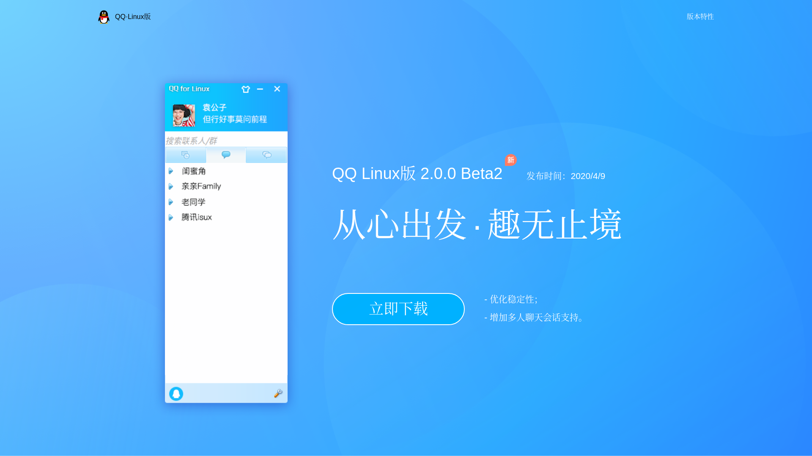
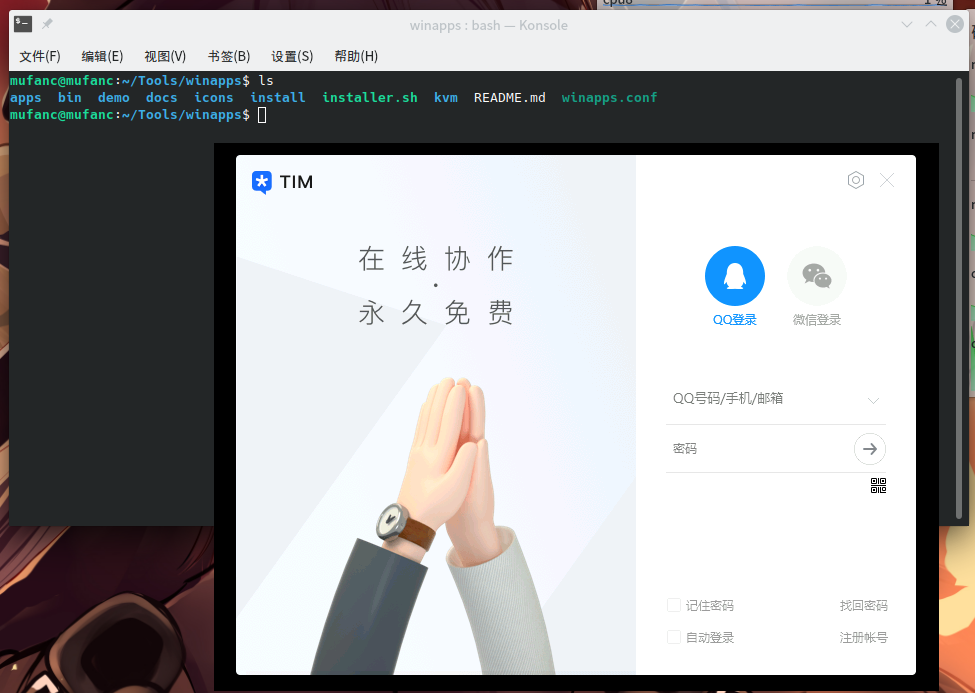
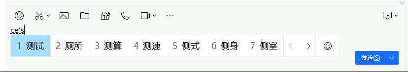
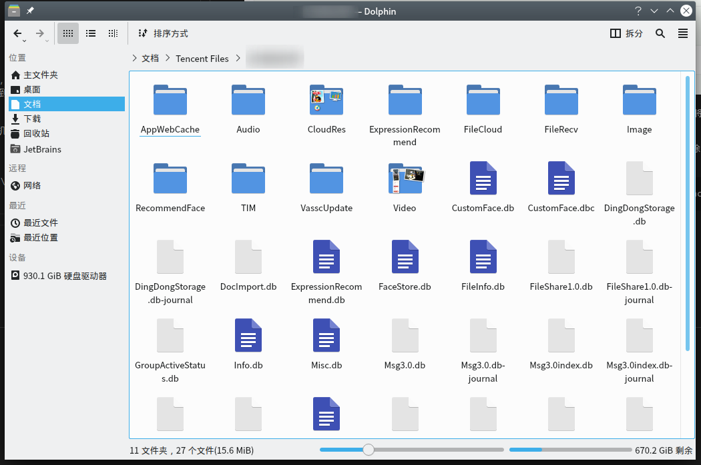

在 linux 系统中优雅地使用 QQ、TIM 一直是广大 linux 爱好者的一大痛点。Deepin wine 版的 QQ 过于老旧，甚至已经无法登录；而第三方客户端长期无人维护，各种不稳定，甚至随时有作者跑路的可能；什么？你说腾讯官方的 QQ for linux？我在下面放一张图，大家自行体会：

这复古的界面，甚至让我有种回到 2008 的错觉，姑且不讨论这东西是否真的能用，单论这卖相，就让我不敢恭维。
一日，在 GitHub 上找到了 WinApps ，顿时眼前一亮，根据官方的描述：
WinApps 支持像原生操作系统一样在 Linux（Ubuntu / Fedora）和 GNOME / KDE 中运行微软 Office / Adobe 等 Windows 应用程序。
截至文章写作时，这个项目已经收获了 5.9k 的 star，其稳定性可见一斑，非常值得一试。
安装并配置 TIM
WinApps 依赖于后台 VM 容器中运行的 Windows RDP 服务器，这里强烈推荐使用 KVM 作为容器，KVM 是一种 CPU 和内存高效的虚拟化引擎，与大多数主要 Linux 发行版捆绑在一起，配置 KVM 的教程随便一搜便有不少，本文着重介绍 WinApps 的配置过程，这里仅放几篇思路比较清晰的文章作为参考：
安装并配置好 Windows 后，将虚拟机重启一次，然后搜索安装 TIM，安装位置保持默认，安装完成后注销虚拟机，接下来准备将 TIM 加入 WinApps 的预定义应用列表中，可以参考 这个 PR
写作本文时，这个 PR 还没有被合并，如果你配置时发现该 PR 已经合并，那么直接执行项目根目录下的 installer.sh 即可
按照 PR 中的说明，在项目文件夹下创建以下两个文件：
1 2 3 <svg t ="1609091179180" class ="icon" viewBox ="0 0 1024 1024" version ="1.1" xmlns ="http://www.w3.org/2000/svg" p-id ="8202" width ="200" height ="200" > <path d ="M511.500488 512.499512m-511.500488 0a511.500488 511.500488 0 1 0 1023.000976 0 511.500488 511.500488 0 1 0-1023.000976 0Z" fill ="#1BC1FA" p-id ="8203" > </path > <path d ="M784.234146 572.440976c8.178014 0 16.273108 0.253752 24.282287 0.728288-16.961436-38.434466-42.247742-69.886751-58.977405-90.331785 2.822244-8.482716 11.30496-56.536788-25.443153-90.453666v-2.827239c0-132.850263-96.103149-231.785647-214.822213-231.785647-118.717065 0-214.82521 96.107145-214.825209 231.785647v2.827239c-33.915879 33.915879-25.437159 81.969951-19.782681 90.453666-25.444152 28.265397-73.49223 87.62343-76.320469 155.461182 0 16.961436 2.827239 45.226833 11.305959 56.531794 11.305959 14.133198 39.570357-2.827239 62.186272-48.054073 5.650482 19.788675 19.78368 53.709549 50.876316 93.281905-50.876316 11.302962-65.009514 62.186271-48.049077 90.450669 11.305959 19.788675 39.570357 33.920874 87.624429 33.920874 78.496343 0 115.815899-19.378076 134.378771-35.711126C492.644901 814.680414 490.520976 800.136617 490.520976 785.233171c0-117.522232 131.500581-212.792195 293.71317-212.792195z" fill ="#FFFFFF" p-id ="8204" > </path > <path d ="M514.925143 819.204995c5.654478 0 11.309955 2.82624 14.132199 5.649483 16.960437 16.960437 53.709549 39.575352 138.50674 39.575352 48.054072 0 76.320468-16.960437 87.625428-33.920874 16.960437-28.264398 2.827239-79.147707-48.054072-90.450669 31.092636-39.572355 45.225834-73.493229 50.881311-93.281905 19.787676 45.226833 50.881311 62.18727 62.186271 48.054073 2.827239-11.30496 5.650482-39.570357 5.650482-56.531794-1.93511-23.223321-8.508691-45.121936-17.337069-65.128398-8.009179-0.475536-16.104273-0.729288-24.282287-0.729287-162.212589 0-293.713171 95.269963-293.71317 212.792195 0 14.903446 2.123926 29.447243 6.147996 43.485533a88.18688 88.18688 0 0 0 4.122973-3.864226c2.827239-2.823243 8.481717-5.649483 14.133198-5.649483z" fill ="#FFFFFF" opacity =".4" p-id ="8205" > </path > </svg >
1 2 3 4 5 6 7 8 9 10 11 12 13 14 # GNOME shortcut name NAME="Tim" # Used for descriptions and window class FULL_NAME="Tencent Tim" # The executable inside windows WIN_EXECUTABLE="C:\Program Files (x86)\Tencent\TIM\Bin\TIM.exe" # GNOME categories CATEGORIES="WinApps;Tencent" # GNOME mimetypes MIME_TYPES="application/tencent-tim"
重新执行 installer.sh，依次选择 User -> Select which pre-configured applications to set up -> Tencent Tim (tim) 然后空格选中，建议同时安装一个 cmd，方便在没有图形界面的情况下管理 Windows，最后回车确定，选择 Do not set up any applications 退出即可
最后在 Ubuntu 的应用程序列表中找到 TIM 并运行，就可以开始愉快的聊天啦!

额外改进
上述方式的优点很多，缺点也很明显，还需要做一些额外的改进:
登录 TIM 之后，我首先发现的问题是 ubuntu 中使用的 fcitx-rime 输入法无法在 TIM 的聊天窗口切出，也就导致了了不能输入中文，对于一个 IM 软件来说这简直就是致命打击😰，好在之前也有人于到过此问题，并提了一个 issue ，根据其中说法，首先执行：
1 xfreerdp /u:<User_Name> /p:<password> /v:<IP number> /kbd-list
查看你的 键盘布局 Keyboard Layouts ，然后编辑 ~/.config/winapps/winapps.conf 添加如下字段：
1 RDP_FLAGS="/kbd:<键盘布局代码>"
将虚拟机重启后，便可以使用虚拟机中的输入法 了：

已知问题：将窗口切到后台时，屏幕上输入法的位置会出现黑框/白框，启动任意其它 WinApps 后消失
WinApps 默认将 home 目录作为一个网络位置挂载到 Windows 虚拟机上，已经非常方便了，但我更希望将 TIM 的数据文件夹直重定向到 ~/Documents 下，这样就能在 ubuntu 中直接访问到 TIM 下载的文件，从而减少一次复制。
首先在 ubuntu 的主目录下创建 Tencent Files 文件夹，然后进入虚拟机将原来的 Tencent Files 文件夹删除，以管理员 权限打开终端，执行：
1 mklink /d "C:\Users\<username>\Documents\Tencent Files" "\\tsclient\home\Documents\Tencent Files"
再次启动 TIM 并登录，便可以在 Dolphin 中看到 TIM 的数据了

在关闭 TIM 窗口后，由于 TIM 实际上是被最小化到了 Windows 的托盘，此时如果再次从应用中启动 TIM，则会提示不能重复登录，十分的反人类。
这里提供一个思路，可以通过编辑注册表项：
1 HKEY_LOCAL_MACHINE\SOFTWARE\Microsoft\Windows NT\CurrentVersion\Image File Execution Options
来劫持 TIM 的启动，控制逻辑也很简单，当远程发起启动请求时，首先检查是否有运行中的 TIM，如果有则直接显示窗口，否则重新启动 TIM。
可以参考这篇文章（英文）：An Introduction to Image File Execution Options
或者采用一种更为摆烂的方式，直接修改 TIM.exe 为 TIM_real.exe，然后编译一个假的 TIM.exe 作为代理，下面是我的实现代码：
1 2 3 4 5 6 7 8 9 10 11 12 13 14 15 16 17 18 19 20 21 22 23 24 25 26 27 28 29 30 31 32 33 34 35 36 37 38 39 40 41 42 43 44 45 46 47 48 49 50 51 52 #include <iostream> #include <tchar.h> #include <windows.h> using namespace std;void launchTIM () STARTUPINFO si; PROCESS_INFORMATION pi; LPTSTR szCmdLine = _tcsdup(TEXT ("C:\\Program Files (x86)\\Tencent\\TIM\\Bin\\TIM_real.exe" )); LPTSTR szWorkDir = _tcsdup(TEXT ("C:\\Program Files (x86)\\Tencent\\TIM\\Bin" )); ZeroMemory (&si, sizeof si.cb = sizeof ZeroMemory (&pi, sizeof if (!CreateProcess ( NULL , szCmdLine, NULL , NULL , FALSE, 0 , NULL , szWorkDir, &si, &pi )) { printf ("CreateProcess failed (%d)./n" , GetLastError ()); return ; } CloseHandle (pi.hProcess); CloseHandle (pi.hThread); } int main () HWND hwTIM = FindWindowA ("TXGuiFoundation" , "TIM" ); if (!hwTIM) { launchTIM (); } else if (!IsWindowVisible (hwTIM)) { ShowWindow (hwTIM, SW_NORMAL); } return 0 ; }
当然这种方式也可能造成一些奇怪的问题，毕竟 TIM 的 argv[0] 被修改了，在使用时还得留个心眼。
在 ubuntu 中最小化 TIM 窗口时会造成窗口鬼畜，暂时没想到什么好的解决办法。这段就留着以后再来补充，如果你有什么好的思路，也欢迎评论交流
参考